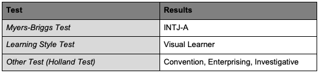
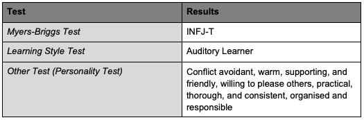
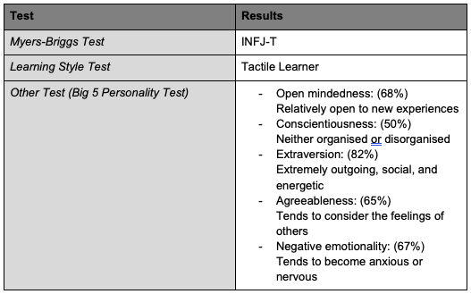
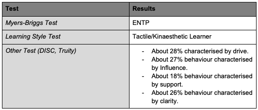
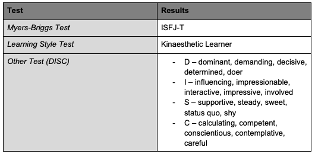

Group Processes:
Our group 'I See Dev People' worked incredibly well together in assignment 2. The team dynamic was ideal, and as a result, we were able to produce a high-quality piece of work. Each team member were assigned tasks and worked independently on them which were in the end amalgamated into the final submission of which we achieved a high mark. Each team member contributed well, and very little follow up was required. From our viewpoint, there are no processes that require change for assignment 3.
Career Plans:
Each of our group members have unique career plans, some relating directly to the IT field and others not so much, but still entailing some kind of IT knowledge. Jack’s Ideal job is to be a DevOps Engineer, while Hayden’s is to be a Cyber security Specialist; these are directly related to the IT industry and will require a high level of IT literacy. What differentiates these roles is the facets that they entail, they all relate to IT, but have their own speciality. On the other hand, Lauren’s career plan is that of a Senior Project Manager, Andrew a Supply Chain Manager and finally Oskar a Financial Planner; these are not directly related to the IT field; however, all have aspects that would be IT minded which would be the most common element. Today, most office jobs relate back to IT in some way or another. All group members’ ideal jobs have very practical aspects, and in their own respects are all very important to the daily running of most organisations and their client’s needs.
Personal Information:
About Andrew:
https://andrewvunguyen.github.io/myprofile/
My name is Andrew Nguyen, and my student number is s3727902. I am a member of the group ‘I see Dev people’. My background is Vietnamese, and I am fluent in both English and Vietnamese. My hobbies include reading and gaming. My recent interest in IT was derived from learning the critical role IT has in the modern workplace. The relevant IT experience I possess includes the Microsoft Office Suite, among others.

About Hayden:
https://haydehill.github.io/haydehill.github.io/
I live in Adelaide, South Australia, my student number is S3799262 and I am a part of the “I see dev people” group. I work full-time as an IT Support Officer, my day to day is spent providing IT help to my company’s workforce and contributing towards the maintenance of the IT network. My interest in IT stems from being fascinated with tech from a young age and what IT can do. The ever presence of IT in day to day life is astonishing, this is what keeps me interested. To date I have completed a certificate level qualification in IT, however now I am looking to further that by completing a degree. In my spare time you’ll find me playing with trains, on a full-sized heritage railway on the Fleurieu Peninsula.

About Jack:
https://ganrmit.github.io/introit-a1/
My name is Jack Strain (SN s3242472) and I'm a member of the I see Dev people group. I'm an Australian coming back to RMIT to get a degree. I speak English and enough Japanese to understand what's going around me or in TV shows. I'm passionate about Japanese, my Corgi, and Unix. I have worked as mobile tech support for a Windows focused company and am a RedHat Certified Engineer. IT and automation interest me greatly as they allow us to achieve more than ever before.

About Lauren:
https://laurenonline.github.io/MyProfile/
My name is Lauren Ralley, Student number S3805366 and I’m a proud Melbournite and member of I See Dev People! I’ve always been at fingers length to a keyboard, virtual or otherwise, ever since I was a child. Although I love the outdoors, adventuring with my dogs and long pointless road trips nothing is more satisfying to me than reading an article or being told about an advancement in technology. I work in Insurance and have overseen some incredible transformation projects centred around technology. I’ve been involved in the discovery and testing of these projects which I’ve enjoyed so I hope to advance my skills in IT and enter a more IT based role in the future.

About Oskar:
https://oskardeacon.github.io/oskardeacon-github.io/
My name is Oskar Deacon and I am 18 years old. My student number is s3799696, I live in Brisbane, Queensland and I am a member of the I see dev people group. I am a full-time student studying a financial planning degree through RMIT. My hobbies include playing squash, playing PlayStation 4 and PC games, going out with friends on the weekends, spending time with my family and watching Netflix. I ever really had an interest in IT until around 16 years of age and this is because at school, I did for one term a small robotics and coding subject. While this wasn’t enough to make me pursue a career in the IT world, it did peak my interests. I have only little IT experience, as the previously mentioned subject was the only experience I had.
